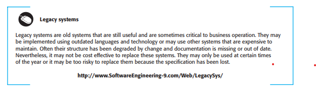
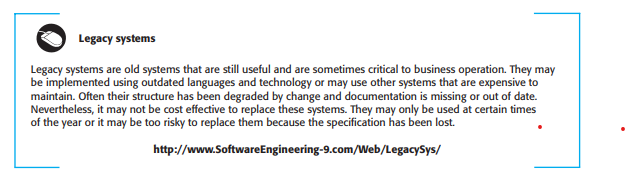

9.3 Software Maintenance
Software maintenance involves modifying a system after delivery. Changes may fix errors, adapt the system, or add new functionality. This is done by modifying existing components or adding new ones.
Types of Software Maintenance
- Fault Repairs - Coding errors are cheaper to fix than design or specification errors, which may require significant changes.
- Environmental Adaptation - This is needed when hardware or software environments change, requiring system adjustments.
- Functionality Addition - This type is needed when system requirements change due to business or organizational needs.
In practice, there is not a clear-cut distinction between these types of maintenance. When you adapt the system to a new environment, you may add functionality to take advantage of new environmental features. Software faults are often exposed because users use the system in unanticipated ways. Changing the system to accommodate their way of working is the best way to fix these faults.
These types of maintenance are generally recognized but different people sometimes give them different names. ‘Corrective maintenance’ is universally used to refer to maintenance for fault repair. However, ‘adaptive maintenance’ sometimes means adapting to a new environment and sometimes means adapting the software to new requirements. ‘Perfective maintenance’ sometimes means perfecting the software by implementing new requirements; in other cases it means maintaining the functionality of the system but improving its structure and its performance. Because of this naming uncertainty, I have avoided the use of all of these terms in this chapter.
There have been several studies of software maintenance which have looked at the relationships between maintenance and development and between different maintenance activities (Krogstie et al., 2005; Lientz and Swanson, 1980; Nosek and Palvia, 1990; Sousa, 1998). Because of differences in terminology, the details of these studies cannot be compared. In spite of changes in technology and different application domains, it seems that there has been remarkably little change in the distribution of evolution effort since the 1980s.
The surveys broadly agree that software maintenance takes up a higher proportion of IT budgets than new development (roughly two-thirds maintenance, one-third development). They also agree that more of the maintenance budget is spent on implementing new requirements than on fixing bugs. Figure 9.8 shows an approximate distribution of maintenance costs. The specific percentages will obviously vary from one organization to another but, universally, repairing system faults is not the most expensive maintenance activity. Evolving the system to cope with new environments and new or changed requirements consumes most maintenance effort.
The relative costs of maintenance and new development vary from one application domain to another. Guimaraes (1983) found that the maintenance costs for business application systems are broadly comparable with system development costs.
These types are not always distinct. Fixing faults may involve adding features, and adapting the system may lead to other changes.

Cost Distribution in Software Maintenance
For embedded real-time systems, maintenance costs were up to four times more than
development costs. The high reliability and performance requirements of these systems mean that modules have to be tightly linked and hence difficult to change.
Although these estimates are more than 25 years old, it is unlikely that the cost distributions for different types of system have significantly changed.
It is usually cost effective to invest effort in designing and implementing a system to
reduce the costs of future changes. Adding new functionality after delivery is expensive
because you have to spend time learning the system and analyzing the impact of the proposed changes. Therefore, work done during development to make the software easier
to understand and change is likely to reduce evolution costs. Good software engineering
techniques, such as precise specification, the use of object-oriented development, and
configuration management, contribute to maintenance cost reduction.
Figure 9.9 shows how overall lifetime costs may decrease as more effort is
expended during system development to produce a maintainable system. Because of
the potential reduction in costs of understanding, analysis, and testing, there is a significant multiplier effect when the system is developed for maintainability. For
System 1, extra development costs of $25,000 are invested in making the system
more maintainable. This results in a savings of $100,000 in maintenance costs over
 

the lifetime of the system. This assumes that a percentage increase in development
costs results in a comparable percentage decrease in overall system costs.
These estimates are hypothetical but there is no doubt that developing software to
make it more maintainable is cost effective, when the whole life costs of the software
are taken into account. This is the rationale for refactoring in agile development.
Without refactoring, the code becomes more and more difficult and expensive to
change. However, in plan-based development, the reality is that additional investment in code improvement is rarely made during development. This is mostly due to
the ways most organizations run their budgets. Investing in maintainability leads to
short-term cost increases, which are measurable. Unfortunately, the long-term gains
can’t be measured at the same time so companies are reluctant to spend money for an
unknown future return.
It is usually more expensive to add functionality after a system is in operation than
it is to implement the same functionality during development. The reasons for this are:
- Team stability After a system has been delivered, it is normal for the development team to be broken up and for people to work on new projects. The new
team or the individuals responsible for system maintenance do not understand
the system or the background to system design decisions. They need to spend
time understanding the existing system before implementing changes to it.
- Poor development practice The contract to maintain a system is usually separate
from the system development contract. The maintenance contract may be given
to a different company rather than the original system developer. This factor,
along with the lack of team stability, means that there is no incentive for a development team to write maintainable software. If a development team can cut corners to save effort during development it is worthwhile for them to do so, even if
this means that the software is more difficult to change in the future.
- Staff skills Maintenance staff are often relatively inexperienced and unfamiliar with
the application domain. Maintenance has a poor image among software engineers.
It is seen as a less-skilled process than system development and is often allocated to
the most junior staff. Furthermore, old systems may be written in obsolete programming languages. The maintenance staff may not have much experience of development in these languages and must learn these languages to maintain the system.
- Program age and structure As changes are made to programs, their structure
tends to degrade. Consequently, as programs age, they become harder to understand and change. Some systems have been developed without modern software
engineering techniques. They may never have been well structured and were
perhaps optimized for efficiency rather than understandability. System documentation may be lost or inconsistent. Old systems may not have been subject to
stringent configuration management so time is often wasted finding the right
versions of system components to change.
The first three of these problems stem from the fact that many organizations still
consider development and maintenance to be separate activities. Maintenance is seen
as a second-class activity and there is no incentive to spend money during development
to reduce the costs of system change. The only long-term solution to this problem is to
accept that systems rarely have a defined lifetime but continue in use, in some form,
for an indefinite period. As I suggested in the introduction, you should think of systems as evolving throughout their lifetime through a continual development process.
The fourth issue, the problem of degraded system structure, is the easiest problem
to address. Software reengineering techniques (described later in this chapter) may
be applied to improve the system structure and understandability. Architectural
transformations can adapt the system to new hardware. Refactoring can improve the
quality of the system code and make it easier to change.
Reducing Maintenance Costs
Investing in designs that reduce future changes is cost-effective. Practices like clear specifications and object-oriented development help lower maintenance costs.
However, organizations may resist such investments due to budget constraints, especially in plan-based development environments.